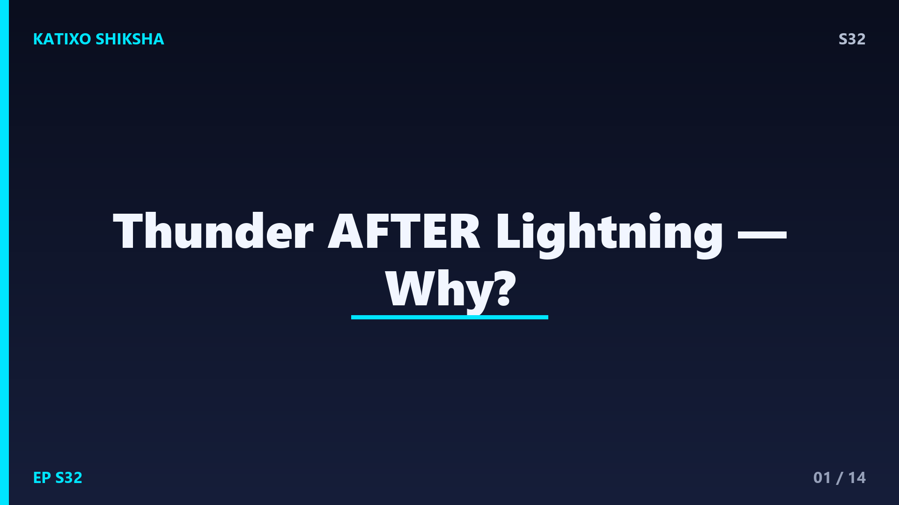
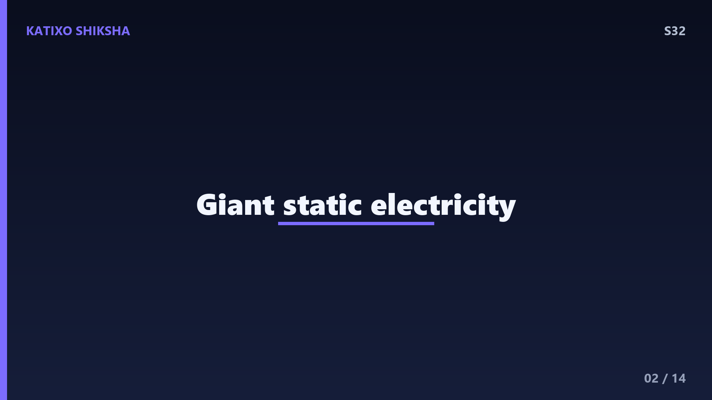
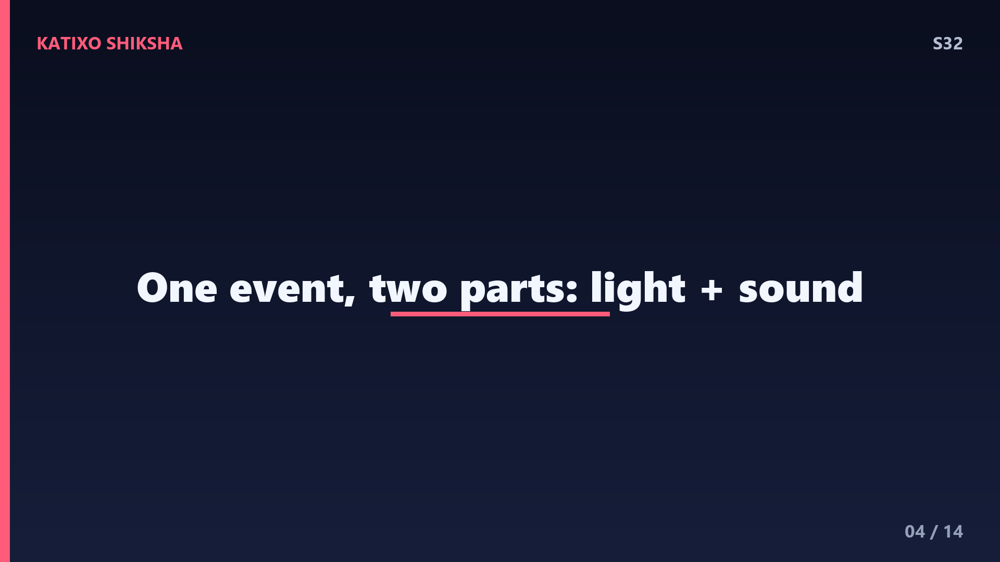
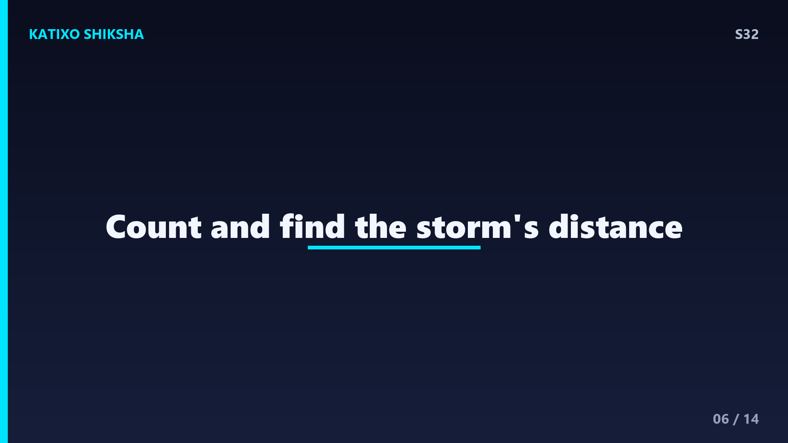
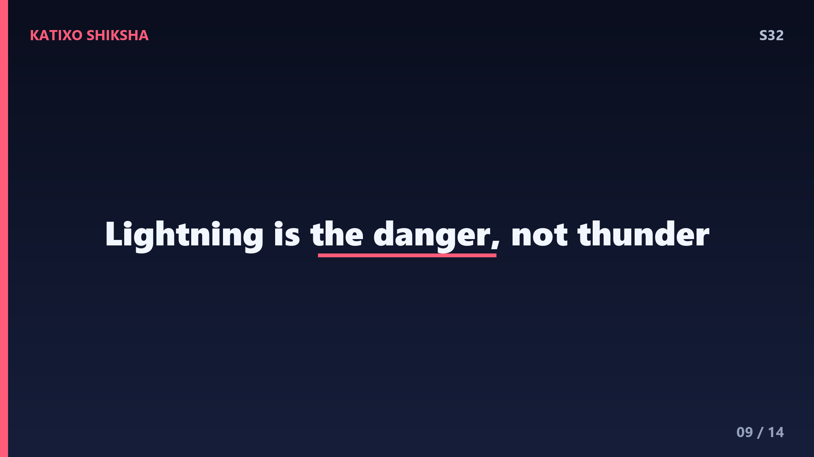
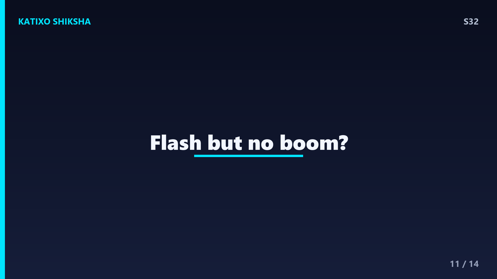
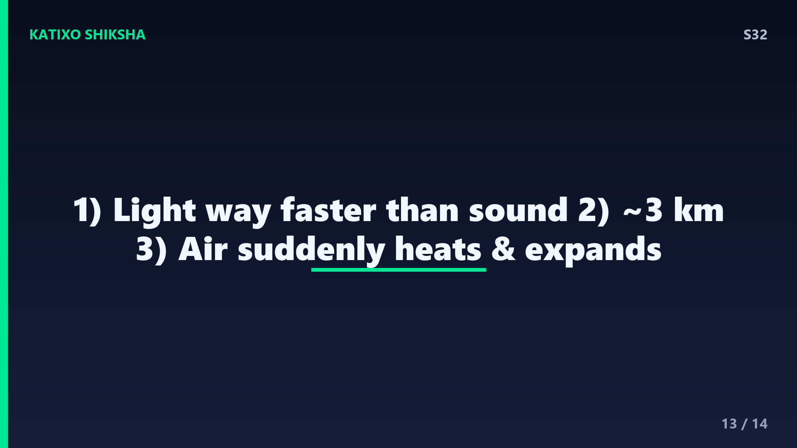

S32 — बिजली के बाद गड़गड़ाहट देर से क्यों आती है?

Slide 1दोस्तों, बारिश की रात... आसमान में अचानक एक चमकीली बिजली कौंधती है। तुम मन ही मन गिनते हो — एक... दो... तीन... और फिर आती है ज़ोरदार गड़गड़ाहट! सवाल ये है — बिजली और गड़गड़ाहट तो एक साथ बनते हैं, फिर आवाज़ देर से क्यों सुनाई देती है? और वो गिनती से हम तूफ़ान की दूरी कैसे पता कर सकते हैं? आज Katixo KhojLab पर हम इस आसमानी रहस्य को पूरी तरह खोलेंगे। चलो, सीधे बादलों में चलते हैं!

Slide 2पहले समझो बिजली बनती कैसे है। तूफ़ानी बादल के अंदर बर्फ़ के छोटे-बड़े टुकड़े और पानी की बूँदें तेज़ी से टकराते रहते हैं। इस रगड़ से charge अलग हो जाता है — हल्के कण ऊपर positive charge ले जाते हैं और भारी कण नीचे negative charge जमा कर लेते हैं। ठीक वैसे जैसे बाल में कंघी करने पर static बनता है, बस लाखों गुना बड़े scale पर। जब ये charge बहुत ज़्यादा हो जाता है, तो हवा अब इसे रोक नहीं पाती। और यहीं से शुरू होता है धमाका।
Slide 3अब charge को निकलने के लिए रास्ता चाहिए। तो एक बड़ी electric spark कूदती है — बादल से बादल, या बादल से ज़मीन। यही है lightning. ये कोई मामूली चिंगारी नहीं — एक bolt में लगभग 30 करोड़ volt तक की ताकत हो सकती है! और सबसे चौंकाने वाली बात — बिजली का तापमान सूरज की सतह से करीब पाँच गुना ज़्यादा, यानी लगभग 30,000 degree Celsius तक पहुँच जाता है। इतनी गर्मी कि आसपास की हवा एकदम पागल हो जाती है। और वही गर्मी बनती है गड़गड़ाहट की असली वजह।

Slide 4अब जादू समझो। जब bolt हवा से गुज़रती है, तो वो हवा पल भर में इतनी गर्म हो जाती है कि बिजली की रफ़्तार से फैलती है — एकदम विस्फोट की तरह। ये अचानक फैलाव हवा में एक shockwave बनाता है, और वही shockwave हमारे कानों तक पहुँचकर बनती है — गड़गड़ाहट, यानी thunder. तो दोस्तों याद रखना — lightning रोशनी है और thunder उसी का sound है। दोनों एक ही घटना के दो हिस्से हैं, एक साथ, एक ही पल में पैदा होते हैं।
Slide 5तो फिर देरी क्यों? इसका राज़ है speed में। रोशनी की रफ़्तार है लगभग 3 लाख किलोमीटर हर second — इतनी तेज़ कि बिजली की चमक तुरंत, बिना किसी देरी के तुम्हारी आँखों तक पहुँच जाती है। लेकिन आवाज़ बेचारी बहुत धीमी है — हवा में आवाज़ की रफ़्तार सिर्फ़ करीब 343 meter हर second, यानी लगभग एक किलोमीटर तीन second में। बस यही फ़र्क पूरा खेल है। रोशनी race जीत जाती है, आवाज़ पीछे रह जाती है। इसीलिए चमक पहले, गड़गड़ाहट बाद में।

Slide 6अब मज़ेदार हिसाब। चूँकि आवाज़ करीब हर 3 second में 1 किलोमीटर चलती है, तुम इससे तूफ़ान की दूरी नाप सकते हो! जैसे ही बिजली चमके, गिनना शुरू करो — एक मिसिसिपी, दो मिसिसिपी — और जब गड़गड़ाहट सुनो तब रुक जाओ। मान लो 6 second गिने, तो तूफ़ान करीब 2 किलोमीटर दूर है। आसान फ़ॉर्मूला — second को 3 से भाग दो, मिल गई दूरी किलोमीटर में! अगली बारिश में ये trick ज़रूर आज़माना, तुम घर बैठे scientist बन जाओगे।
Slide 7एक और सवाल — कभी गड़गड़ाहट छोटी सी कड़क होती है, कभी देर तक गूँजती रहती है, क्यों? इसकी वजह ये है कि bolt कोई एक point नहीं, बल्कि कई किलोमीटर लंबी टेढ़ी-मेढ़ी लकीर होती है। उसके अलग-अलग हिस्सों से आती आवाज़ अलग-अलग समय पर हम तक पहुँचती है — पास वाला हिस्सा पहले, दूर वाला बाद में। इसीलिए एक ही गड़गड़ाहट खिंचकर लंबी हो जाती है। और पहाड़, बादल और इमारतें उस आवाज़ को टकराकर लौटाती हैं — वही है gड़गड़ाहट की लंबी गूँज, यानी echo।
Slide 8अब एक खतरे की बात जो हर किसी को पता होनी चाहिए। अगर बिजली और गड़गड़ाहट के बीच का अंतर बहुत कम हो जाए — मान लो 3 second से भी कम — तो इसका मतलब तूफ़ान तुम्हारे बहुत पास है, करीब एक किलोमीटर के अंदर। ये danger zone है। ऐसे में खुले मैदान, पेड़ के नीचे या पानी से दूर रहना चाहिए और किसी पक्की building के अंदर चले जाना चाहिए। Science सिर्फ़ मज़े के लिए नहीं, कई बार जान बचाने के लिए भी होती है, दोस्तों।

Slide 9एक common गलतफ़हमी भी दूर कर दें। बहुत लोग सोचते हैं गड़गड़ाहट खुद कोई नुकसान करती है — ऐसा नहीं है। thunder सिर्फ़ आवाज़ है, एक shockwave, जो डराती ज़रूर है पर चोट नहीं पहुँचाती। असली ताकत और खतरा है lightning में, यानी रोशनी और बिजली के उस bolt में। एक और मज़ेदार fact — धरती पर हर एक second में करीब 40 से 50 बार बिजली गिरती है, यानी जब तक तुमने ये line सुनी, सैकड़ों bolts कहीं न कहीं चमक चुके हैं!
Slide 10तो चलो पूरी कहानी एक साथ जोड़ें। बादल में charge बनता है, एक बड़ी spark यानी lightning कूदती है, हवा 30,000 degree तक गर्म होकर फटती है और बनती है shockwave — यानी thunder. रोशनी तुरंत पहुँचती है क्योंकि वो super fast है, आवाज़ धीमी होने की वजह से देर से आती है। और उसी देरी से हम दूरी नाप लेते हैं। एक चमक, एक आवाज़, और उसके पीछे छुपा पूरा physics — कमाल है ना दोस्तों!

Slide 11थोड़ा और दिमाग चकरा दें। तुमने कभी सोचा है कि बहुत दूर की बिजली में सिर्फ़ चमक दिखती है पर गड़गड़ाहट सुनाई ही नहीं देती? इसे कहते हैं heat lightning. असल में आवाज़ करीब 16 किलोमीटर से ज़्यादा दूर जाते-जाते हवा में घुलकर इतनी कमज़ोर हो जाती है कि कान तक पहुँच ही नहीं पाती, जबकि रोशनी आराम से दिख जाती है। तो हर बार चमक के बाद गड़गड़ाहट ज़रूरी नहीं — कभी तूफ़ान बस बहुत दूर होता है। प्रकृति के अपने नियम हैं!
Slide 12Quick brain check! Video pause करो और तीनों सवालों के जवाब खुद सोचो। पहला — बिजली और गड़गड़ाहट एक साथ बनते हैं, फिर भी चमक पहले क्यों दिखती है? दूसरा — अगर तुमने चमक के बाद 9 second गिने, तो तूफ़ान कितनी दूर है? और तीसरा — गड़गड़ाहट की असली वजह क्या है, हवा का अचानक क्या होना? सोचो ज़रा... हिंट — रोशनी की रफ़्तार बहुत बड़ी चीज़ है। Ready? चलो answers देखते हैं!

Slide 13जवाब! पहला — चमक पहले इसलिए दिखती है क्योंकि रोशनी की रफ़्तार 3 लाख किलोमीटर per second है, जबकि आवाज़ सिर्फ़ 343 meter per second, यानी बहुत धीमी। दूसरा — 9 second को 3 से भाग दो, तो तूफ़ान करीब 3 किलोमीटर दूर है। और तीसरा — गड़गड़ाहट तब बनती है जब बिजली से हवा अचानक बहुत गर्म होकर तेज़ी से फैलती है और shockwave बनाती है। तीनों सही? वाह, तुम तो असली weather scientist निकले!
Slide 14तो आज हमने सीखा — lightning और thunder एक ही घटना हैं, रोशनी तेज़ होने से पहले दिखती है और धीमी आवाज़ बाद में आती है, और उस देरी से हम तूफ़ान की दूरी नाप सकते हैं। साथ में एक safety lesson भी मिला। अगले episode में एक और मज़ेदार सवाल — noise-cancelling headphones बाहर का शोर गायब कैसे कर देते हैं? technology का असली जादू देखने को मिलेगा! Subscribe करना मत भूलना दोस्तों! Bye!